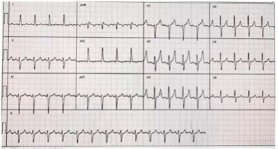
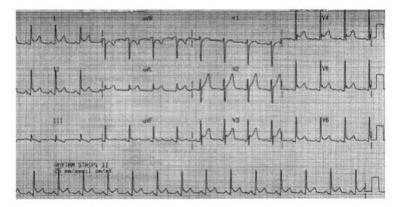
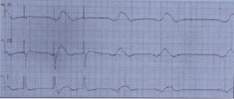

Questão 1 · Complicações da DRC Doença Mineral e óssea · 4000188049Quanto a doença renal crônica é INCORRETO afirmar:
A São fatores de riscos para doença renal crônica: obesidade, hipertensão arterial, diabetes melito, doenças autoimunes, idade avançada, história familiar de doença renal e anormalidades estruturais do trato urinário.
B A anemia na doença renal crônica geralmente é normocítica e normocrômica e está associada principalmente a redução na produção de eritropoetina.
C São fatores que podem precipitar hiperpotassemia em pacientes com doença renal crônica: aumento da ingesta dietética de potássio, hemólise, transfusão de concentrado de hemácias estocado, acidose metabólica, uso de fármacos como diuréticos poupadores de potássio ou inibidores do sistema renina/angiotensina.
D Há dois distúrbios ósseos associados a doença renal crônica: alterações de baixo turnover ósseo associada a elevados níveis de PTH com na osteíte fibrosa do hiperparatireoidismo secundário e alterações de alto turnover ósseo associada a baixos níveis de PTH como na doença óssea dinâmica.
E Doença cardiovascular é a principal causa de morbidade e mortalidade entre doentes renais crônicos em qualquer estágio da doença.
Questão 2 · Manejo da Hipertensão arterial · 4000187382O manejo da Hipertensão Arterial - HA em pacientes sob tratamento dialítico é desafiador, sendo correto o item:
A Especialmente devido à sobrecarga de volume que reduz a variabilidade da PA, superestimando-a na pré-diálise e subestimando-a depois dela.
B Especialmente devido à sobrecarga de volume que aumenta a variabilidade da PA, superestimando-a na pré- diálise e não a subestimando depois dela.
C Especialmente devido à redução de volume que aumenta a variabilidade da PA, superestimando-a na pré-diálise e subestimando-a depois dela.
D Especialmente devido à sobrecarga de volume que aumenta a variabilidade da PA, superestimando-a na pré- diálise e subestimando-a depois dela.
Questão 3 · Complicações da DRC · Complicações da DRC Anemia · Doença Renal Crônica · 4000186624Homem, 60 anos, hipertenso há 20 anos, com doença renal crônica, KDIGO estágio 3b, comparece à consulta ambulatorial de revisão. Está em uso de doses máximas de enalapril, hidroclorotiazida e sinvastatina. Ao exame, apresenta PA 150/90 mmHg e edema 1+/4. Traz exames laboratoriais: hematócrito 33% e hemoglobina 10,5 g/dL, creatinina 2,0 mg/dL, potássio 4,3 mEq/L, bicarbonato19 mEq/l, cálcio sérico 7,8 mg/dL albumina 4,2 g/dL, fósforo 5,1 mg/dL e PTH intacto 300 pg/mL. Em relação às complicações da doença renal crônica neste caso, assinale a alternativa correta.
A O nível de pressão arterial deste paciente está relacionado à maior mortalidade, estando indicado associar losartana para melhor bloqueio do sistema renina-angiotensina-aldosterona.
B Anemia ocorre neste estágio da doença, sendo indicado iniciar reposição de eritropoetina humana se as reservas de ferro forem adequadas.
C Hiperparatireoidismo secundário é uma complicação deste paciente, sendo indicado o início de calcitriol.
D Acidose metabólica é uma complicação frequente neste paciente, estando indicada a reposição de citrato.
Questão 4 · Hemodiálise · 4000185434Mulher, 57 anos, portadora de insu ciência renal crônica pré-dialítica, procura a emergência de um hospital apresentando queixa de mal-estar, desconforto torácico inespecí co, náuseas e vômitos há 2 dias. O exame físico evidencia hálito urêmico, atrito pericárdico e presença de pulso paradoxal. Foi realizado eletrocardiograma de repouso que não evidenciou alterações do segmento ST. Com base no caso clínico, assinale a alternativa correta.
A A causa mais provável é pericardite tuberculosa.
B O achado de pulso paradoxal não sinaliza gravidade no caso em questão.
C O quadro sugere síndrome coronariana aguda, e a paciente deve ser encaminhada ao cateterismo cardíaco.
D Há indicação absoluta de hemodiálise.
E A ausência de alterações no segmento ST afasta a possibilidade de pericardite.
Revisar: possível letra faltando em enunciado
Questão 5 · Complicações da DRC Doença Mineral e óssea · 4000184844Mulher, 55 anos, com insu ciência renal crônica, em diálise há 8 anos, apresenta placa necrótica de 5cm em mama direita. Pode-se afirmar que a fisiopatologia mais provável dessa lesão é:
A hiperparatireoidismo
B acidose metabólica
C aterosclerose avançada
D hipercalemia refratária
Questão 6 · Hemodiálise · Indicações de Terapia renal substitutiva · 4000184839Mulher, 30 anos, com DM tipo 1, tem doença renal crônica estágio 5 e está em tratamento conservador. Nega sintomas urêmicos. Exame físico: PAS = 150x90mmHg; atrito pericárdico à ausculta cardíaca; discreto edema no 1/3 inferior dos membros inferiores; aparelho respiratório e abdome sem alterações. Exames laboratoriais: ureia = 180mg/dL; creatinina = 6,6mg/dL; potássio = 4,5mEq/L e reserva alcalina 20mEq/L. Pode-se afirmar que a melhor opção terapêutica é:
A diurético de alça venoso.
B corticosteroide para tratamento da pericardite.
C hemodiálise de urgência.
D tratamento conservador.
Questão 7 · Nef rologia · 4000183296Um paciente doente renal crônico, em piora progressiva nos últimos meses, encontrava-se no oitavo dia de internação na enfermaria de clínica médica da Santa Casa de São Paulo, devido ao diagnóstico de tromboembolismo pulmonar. Evoluiu com melhora clínica, seu escore de PESI era de baixo risco, seu ecocardiograma não apresentou alterações; troponina e BNP estavam normais. Estava em uso de heparina em bomba de infusão contínua ajustada conforme TTPA. No momento da alta hospitalar, tinha clearance de creatinina de 18 mL/min/1,73 m². Possui boas condições sociais. Entre os fármacos a seguir, o mais adequado ao paciente do caso clínico acima é
A rivaroxabana, pois promove a menor excreção renal entre os novos anticoagulantes orais (Noacs).
B apixabana, pois promove a menor excreção renal entre os Noacs.
C dabigatrana, pois promove a menor excreção renal entre os Noacs.
D marevan, pois promove baixa excreção renal e menor risco de sangramento em doentes renais crônicos.
E endoxabana, pois promove a menor excreção renal entre os Noacs.
Questão 8 · Nef rologia · 4000183136Menino, 4 anos de idade, portador de doença renal crônica estágio 3b por displasia renal, apresenta falha de crescimento persistente, definida como estatura abaixo do 3º percentil para a idade e sexo, e velocidade de crescimento abaixo do 25º percentil nos últimos 6 meses. Trouxe exames na consulta de rotina: creatinina = 1,4 mg/dL, ureia = 68 mg/dL, sódio = 138 mmol/L, HCO₃ adequada?
A Iniciar terapia de substituição renal.
B Otimizar o aporte proteico e calórico.
C Iniciar terapia com hormônio de crescimento.
D Otimizar a reposição de bicarbonato e vitamina D.
Questão 9 · Nef rologia · Estratégias preventivas · 4000182750Um homem de 62 anos, com DM tipo 2 e HAS, usando Metformina e Hidroclorotiazida está com PA 150/90mmHg. Como resultados de exames, apresenta creatinina 1,4mg/dL, HbA1c 8%, proteína urinária 1.000mg e creatinina urinária 900mg. Em relação a retardar a progressão da nefropatia, a medida mais efetiva é:
A Suspender a Metformina.
B Associar insulina.
C Iniciar Losartana.
D Trocar Hidroclorotiazida por Furosemida
Questão 10 · Tratamento não medicamentoso · Manejo da DRC · Manejo da Hipertensão arterial · 4000192396Homem, 70 anos, hipertenso e diabético há 15 anos, com diagnóstico de doença renal crônica há 5 anos, em consulta ambulatorial de rotina, queixa-se de cansaço aos esforços e de piora do edema em membros inferiores. Ao exame físico, peso 72 Kg, altura 150cm, PA 160/100 mmHg e edema de membros inferiores +++/4. Hemoglobina de 10,5 g/dL, creatinina de 3,6 mg/dL, potássio de 5,5 mg/dL, glicemia jejum 234 mg/dL, ferritina de 90 ng/mL, saturação de transferrina de 18%, proteína urinária de amostra de 30 mg/dL e creatinina urinária de amostra de 100 mg/dL. Em relação ao tratamento para este caso, deve-se: I. Estimular redução de peso, controle da pressão arterial e da diabete melito, além de dieta com restrição de potássio. II. Orientar restrição de ingesta de sal (4g de sódio por dia), de proteínas para 1,0 g/Kg/dia, além de ingesta de no mínimo de 2 litros de água por dia. III. Iniciar eritropoietina para correção da anemia. Está/Estão correta(s) apenas a(s) afirmativa(s)
A I.
B II.
C I e III.
D II e III.
Questão 11 · Complicações da DRC Doença Mineral e óssea · Manejo da DRC · 4000191685Homem, 59 anos, comparece a atendimento ambulatorial após realizar exames de sangue de rotina. É portador de hipertensão arterial sistêmica e diabetes mellitus, com tratamento e acompanhamento irregulares. O exame físico é normal. Exames laboratoriais: creatinina = 2,54 mg/dl (VR: 0,8-1,3); ureia = 75 mg/dl (VR: 20-40); cálcio = 9,2 mg/dl (VR: 8,5-10,6); sódio = 135 mEq/L (VR: 134-145); potássio = 5,3 mEq/L (VR: 3,5- 5,5); magnésio = 2,31 mg/dl (1,5-2,4); fósforo = 6,45 mg/dl (VR: 3-4,5); PTH = 96 pg/ml (10-65); vitamina D = 28 Ul (VR: 20-30). O tratamento adequado é prescrever:
A Furosemida.
B Calcitriol.
C Sevelâmer.
D Hidróxido de alumínio. ida oib pr ed
Questão 12 · Nef rologia · Hemodiálise · 4000178549Paciente de 64 anos, sexo masculino, diabético tipo 2 há 22 anos, com adesão insatisfatória ao plano de cuidados, foi internado em hospital de cuidados terciários, com quadro clínico compatível com uremia (sonolência, anorexia, náuseas, vômitos e soluços). Exames laboratoriais confirmaram importante retenção azotada, acidose metabólica, hipercalemia moderada, hipocalcemia e hiperfosfatemia. Em função do estado urêmico, sua doença renal crônica foi abordada com a realização de hemodiálise (HD) convencional, tendo sido providenciada a punção de veia jugular interna direita, por onde foi posicionado um cateter venoso central de duplo lúmen. Logo nos primeiros minutos após iniciada a HD, o paciente passou a apresentar quadro de hipotensão arterial, A explicação mais adequada para o quadro apresentado no início da sessão de HD é
A embolia pulmonar gasosa precipitada pela punção venosa profunda.
B síndrome de desequilíbrio dialítico provocado por desvios osmóticos graves.
C rápida mobilização de fluidos por ultrafiltração na ausência de resposta autonômica adequada.
D reação anafilática/anafilactoide ao óxido de etileno utilizado para esterilização do sistema de HD.
Questão 13 · Manif estações clínicas da hipercalemia · Hemodiálise · 4000170461Considere um paciente de 57 anos de idade, etilista de duas latinhas de cerveja ao dia, diabético insulinodependente controlado (hemoglobina glicada = 4,7% (valor de referência para diabetes = 6,5% a 7,0%). Não apresentando nenhuma queixa, mas mantendo-se hipertenso de difícil controle, compareceu à consulta com o cardiologista que, após conferir exames, encaminhou o paciente ao colega nefrologista. Foram analisadas as parciais de ureia = 304 mg/dL (VR até 40 mg/dL), Creatinina = 8,73 mg/dL (VR = 0,7 a 1,3 mg/dL) e potássio = 7,8 mmol/L (VR = 3,6 a 5,2 mmol/L). O eletrocardiograma (ECG) mostrou o resultado a seguir. Com base nesse caso clínico e nos conhecimentos médicos correlatos, assinale a alternativa correta.

A Em razão de o paciente estar estável, ele poderá ir para casa e aguardar consulta ambulatorial com nefrologista.
B O paciente apresenta quadro clínico de doença renal crônica (DRC), mas ECG chama a atenção para a necessidade de terapia renal substitutiva.
C O paciente possui quadro compatível com tratamento conservador da DRC, podendo aguardar, com propedêutica adequada, a confecção de fistula para início de hemodiálise.
D Com esse paciente, é importante abrir mão um pouco do controle glicêmico por estar bem ajustado e iniciar o controle de hipertensão arterial com inibidores da enzima conversora de angiotensina e melhorar a hidratação.
E Há boa evidência de que atividade física contribui ou evita a progressão da DRC diretamente no rim.
Questão 14 · Rastreio da doença renal do diabetes · Manejo da Nef ropatia diabética · 4000168353Paciente de 56 anos, com hipertensão arterial desde os 50 e obesidade (IMC de 31 kg/m²), foi diagnosticado com diabetes melito tipo 2 há 1 ano. Vinha em uso de enalapril (20 mg, 2 vezes/dia), hidroclorotiazida (25 mg/dia), metformina (2.000 mg/dia) e glimepirida (4 mg, 2 vezes/dia). Foi encaminhado ao nefrologista para avaliação da função renal. Exames laboratoriais revelaram creatinina de 1,7 mg/dl (CKD-EPI de 46 ml/min), potássio de 4,9 mg/dl, HbA1c de 8,9%, albuminúria em amostra de 256 mg/l e EQU sem achados patológicos. Visto que apresenta doença renal do diabetes, recebeu, para esse diagnóstico, a prescrição de:
A redução de 50% na dose de metformina.
B inibidor do SGLT-2 (cotransportador sódio-glicose 2).
C análogo do GLP-1 (peptídio glucagon-like-1).
D espironolactona.
Questão 15 · Hemodiálise · 4000168200Um paciente de 70 anos, renal crônico em tratamento conservador (última creatinina = 4,8 mg/dl) foi submetido à cirurgia de urgência devido à diverticulite perfurada. No segundo dia de pós-operatório, desenvolveu oligúria e queixas de fraqueza muscular, embora estivesse com níveis pressóricos estáveis e sem sinais de níveis de infecção. Exames laboratoriais mostraram creatinina = 6,7 mg/dl e potássio = 7,5 mEq/l, ECG mostrava ondas T simétricas e apiculadas, com intervalo QRS discretamente alargado. Foram administrados, de imediato, gluconato de cálcio e solução de glicose e insulina. Qual a próxima medida a ser tomada?
A Hemodiálise
B Resinas de troca sônica
C Bicarbonato de sódio.
D Furosemida
E Expectante, monitorizando diariamente os níveis séricos de potássio
Questão 16 · Medicações que provocam glicosúria inibidores de SGLT2 · Manejo da Nef ropatia diabética · 4000168109Inibidores do sistema reninaangiotensinaaldosterona Paciente masculino de 60 anos, portador de hipertensão arterial sistêmica, diabetes mellitus, hipotireoidismo, obesidade, nefrolitíase e doença renal crônica com taxa de ltração glomerular estimada por CKD-EPI de 45 ml/min e com albuminúria de 300mg/g de creatinina. Sobre esse caso, responda quais são os medicamentos com benefício em retardar progressão da doença renal crônica para estádio 5, dentre as opções a seguir.
A Losartana e Dapaglifozina
B Anlodipino, Losartana, Digoxina e Furosemide.
C Anlodipino, Losartana, Atenolol e Furosemide.
D Sinvastatina, Losartana, Atenolol e Anlodipino.
E Atensina, Losartana, Atenolol e Furosemide.
Questão 17 · Nef rologia · Hemodiálise · 4000167783Um paciente de 45 anos de idade vem apresentando sintomas de palpitação, mal-estar e sudorese profusa no decorrer da hemodiálise. Em cada sessão, são ultra ltrados 4 litros em duas horas e meia. Na última diálise, o paciente cou com hipotensão = 85 mmHg x 40 mmHg, SatO2 = 94% em ar ambiente e frequência cardíaca conforme o eletrocardiograma a seguir. Fonte: 150 ECGs Com base nesse caso clínico e nos conhecimentos médicos correlatos, julgue o item a seguir. Nesse paciente, a realização de diálise deve ser feita em um período de tempo mais curto e com maior ultrafiltração.

A Certo.
B Errado.
Questão 18 · Manejo da Hipertensão arterial · 4000167633Em pacientes hipertensos com doença renal crônica, existem particularidades que devem ser observadas ao se propor o tratamento adequado. Acerca do tratamento da hipertensão arterial sistêmica para esses indivíduos e conforme as recomendações das Diretrizes Brasileiras de Hipertensão Arterial - 2020, julgue o item. A meta de tratamento de pacientes desse grupo é a mesma para diabéticos e não diabéticos: pressão arterial < 130 mmHg X 80 mmHg.
A Certo.
B Errado.
Questão 19 · Manejo da DRC · 4000167632Em pacientes hipertensos com doença renal crônica, existem particularidades que devem ser observadas ao se propor o tratamento adequado. Acerca do tratamento da hipertensão arterial sistêmica para esses indivíduos e conforme as recomendações das Diretrizes Brasileiras de Hipertensão Arterial - 2020, julgue o item. A associação entre bloqueadores do receptor AT1 da angiotensina II e inibidores da enzima conversora de angiotensina é útil nos casos que cursam com albuminúria importante.
A Certo.
B Errado.
Questão 20 · Quadro Clínico · Hiperparatireoidismo secundário · Quadro Clínico · 4000166820As doenças osteometabólicas incluem um grupo extenso de afecções que alteram o metabolismo ósseo, resultando, entre outras coisas, em aumento ou redução generalizada da massa óssea. Dentro deste contexto, o hiperparatireoidismo secundário tem relação direta com
A o escorbuto.
B a osteodistrofia renal.
C o raquitismo.
D as mucopolissacaridoses.
Questão 21 · Nef rologia · Hemodiálise · 4000165146Sobre doença renal crônica em estado terminal, assinale a alternativa correta.
A Deve-se instituir terapia de substituição em pacientes com taxa de filtração glomerular estimada abaixo de 10mL/minuto/1,73m2 em caráter emergencial.
B A primeira opção de modalidade dialítica proposta deve ser a hemodiálise, sendo a diálise peritoneal restrita aos pacientes com contra-indicação à hemodiálise ou com falência de acesso vascular.
C Caso indicada hemodiálise em paciente ainda sem confecção de fístula artéria-venosa, o sítio preferencial de punção venosa central para implante de cateter é a veia subclávia direita, graças ao alto fluxo permitido por este vaso.
D Por conta da escassez de potenciais doadores, o transplante renal deve ser restrito a indivíduos com menos de 60 anos de idade e sem comorbidades graves.
E A adequacidade da hemodiálise depende de fatores inerentes ao próprio tratamento, como duração da sessão e fluxos de sangue e de dialisato , assim como fatores relativos ao paciente, como o tamanho do indivíduo.
Questão 22 · Nef rologia · Hemodiálise · 4000165144Sr. Nivaldo, 72 anos, DM II e HAS de longa data consultou com médico de família por conta de meses de hiporexia e repulsa a proteína de origem animal. Antes, um entusiasta de churrasco, já não podia nem ouvir falar no assunto. Também percebeu estar mais edemaciado e o diurético que fazia uso não dava mais conta de controlar o inchaço. Exames mostraram ureia 210 mg/dL, creatinina 6,2mg/dL, potássio sérico 6,4mmol/L e hemoglobina 8,2g/dL. Ultrassonogra a de aparelho urinário evidenciou sinais de doença renal crônica. Encaminhado ao nefrologista que, constatando DRC em estadio terminal, indicou hemodiálise. De forma inocente, Sr. Nivaldo acreditando que a hemodiálise isoladamente resolveria todos seus problemas, não fez uso de qualquer farmacoterapia que o nefrologista indicou. Das alterações que apresentava antes de iniciar as sessões de hemodiálise, qual provavelmente não melhorou após o tratamento dialítico?
A Anemia.
B Edema.
C Hipercalemia.
D Ureia elevada.
E Creatinina elevada.
Questão 23 · Tratamento da hipercalemia · Hipercalemia · 4000124088Paciente de 62 anos, diabético, hipertenso, em uso de losartana e glimepirida, comparece a consulta ambulatorial de rotina assintomático, apresentando os seguintes resultados no exame de sangue: ureia = 56mg/dL, creatinina = 1,8mg/dL, potássio = 6,3mEq/L. Tendo em vista esses resultados, a conduta mais adequada é:
A iniciar furosemida, manter a losartana e retornar com novos exames em sete dias.
B infundir de solução de glicose com insulina na Emergência.
C suspender a losartana, iniciar dieta com restrição alimentos ricos em potássio e retornar em sete dias.
D suspender a losartana e solicitar ecodoppler de artérias renais.
E suspender a losartana e iniciar amilorida.
Questão 24 · Manejo da Nef ropatia diabética · 4000110810Você atua como médico de família e comunidade em uma Unidade de Saúde da Família e atende uma paciente do sexo masculino, de cor branca, com 62 anos de idade e história de hipertensão arterial sistêmica e diabetes mellitus tipo 2, que vem para uma consulta de rotina e não apresenta queixas. Ele usa enalapril 20 mg/dia, anlodipino 5 mg/dia, metformina XR 500 mg/dia. No exame físico, você identi ca paciente em bom estado geral, pesando 72 Kg, FC = 80 bpm, PA = 126 x 80 mmHg. Ele lhe traz os resultados de exames laboratoriais que você pediu na última consulta. Glicemia de jejum: 110 mg/dL, HbA1C: 7%, creatinina: 2,0 mg/dL, sódio: 137 mEq/L, potássio: 4,2 mEq/L, relação albuminúria/creatinúria: 350 mg/g. Nessa situação, além de orientar alimentação adequada e exercícios físicos regulares, qual seria a sua conduta?
A Suspender o anlodipino e elevar a dose do enalapril para 20 mg de 12/12h.
B Manter as medicações prescritas nas mesmas doses, repetir os exames e reavaliar em 1 mês.
C Substituir a metformina por glibenclamida e manter as demais medicações prescritas.
D Suspender o enalapril e elevar a dose do anlodipino para 5 mg de 12/12h.
Revisar: possível letra faltando em enunciado
Questão 25 · Complicações da DRC Anemia · 4000029969No tratamento com agentes estimulantes da eritropoiese (AEE).
A a principal causa de resistência nos pacientes em hemodiálise é a aplasia pura dehemácias.
B os estados inflamatórios crônicos podem perpetuar a anemia por aumento naprodução de hepcidina.
C o uso adjuvante de andrógenos reduz a incidência de resistência.
D a resistência deve ser confirmada pela dosagem dos níveis séricos de eritropoietina.
Questão 26 · Complicações da DRC Anemia · 4000021492A principal causa da anemia da doença renal crônica é:
A presença de anticorpos circulantes anti-eritropoietina.
B diminuição da produção de eritropoietina.
C fibrose da medula óssea pela doença mineral e óssea.
D diminuição do número de receptores celulares de eritropoietina.
E Diminuição da meia-vida das hemácias.
Questão 27 · Manejo da Nef ropatia diabética · 4000021118Um paciente de 23 anos, há 8 anos com diagnóstico de diabetes mellitus tipo I, desenvolve microalbuminúria (confirmada em 2 exames). Sua pressão arterial é 124/74 mmHg e seu clearance de creatinina estimado é 95 ml/min. Qual é a conduta apropriada diante de tal evolução?
A indicar dieta hipoproteica (0,6 g/Kg/dia).
B indicar bloqueador de canal de cálcio.
C repetir dosagem de microalbuminúria em 1 ano.
D indicar inibidor de enzima conversora de angiotensina (IECA).
E indicar beta-bloqueador.
Questão 28 · Manejo da Nef ropatia diabética · 4000003096Mulher de 42 anos de idade com diabete melito insulinodependente por 20 anos, apresenta retinopatia diabética, protenúria e depuração de creatinina normal. A pessoa arterial é de 164 x 108 mmhg e um discreto edema tibial é observado. A maneira mais eficiente de se preservar a função renal dessa paciente é:
A Controle da pressão arterial com inibidores da ECA.
B Dieta pobre em proteínas e diurético.
C Controle da pressão arterial e dieta pobre em proteínas.
D Controle rigoroso da glicemia e diuréticos.
E Controle da pressão arterial com bloqueadores dos canais de cálcio.
Questão 29 · Complicações da DRC Coagulopatia · 4000121403A coagulopatia da doença renal crônica é causada principalmente por
A consumo dos fatores da coagulação.
B disfunção plaquetária.
C menor concentração de eritropoietina.
D plaquetopenia.
E produção insuficiente dos fatores da coagulação.
Questão 30 · Pericardite urêmica · 4000112121Homem, 72 anos, renal crônico dialítico, queixa-se de adinamia, cansaço e dor torácica contínua, sem outros fatores acompanhantes. O exame revela o paciente com hálito urêmico, hemodinamicamente estável e presença de atrito pericárdico na ausculta cardíaca. O eletrocardiograma está ilustrado a seguir. Assinale a alternativa que apresenta o melhor tratamento nesse momento.

A Colchicina com ibuprofeno.
B Metilprednisolona.
C Prednisona oral e paracetamol.
D Frenagem pericárdica.
E Hemodiálise.
Questão 31 · Etiologia da Doença Renal Crônica DRC · Estratégias preventivas · 4000077238FSC tem 56 anos, é hipertenso e estava em uso de hidroclorotiazida. Há dois anos não vinha ao posto de saúde para acompanhamento. Vem para consulta com exames da Unidade de Pronto Atendimento, realizados no nal de semana. Refere que no nal da tarde do sábado apresentou um quadro de cefaleia e que a pressão estava 180 x 120 mmHg. Foi realizada glicemia na ocasião e o valor foi de 326 mg/dl, a creatinina de 3,8 mg/dl e eletrólitos dentro da normalidade. Hoje na consulta, a pressão arterial aferida foi de 160 x 90 mmHg e a glicemia capilar em jejum de 252 mg/dl. Auscultas cardíaca e pulmonar normais. Membros sem edemas com pulsos presentes. O clearance estimado para o paciente foi calculado por aplicativo sendo 20 ml/min/1.73 ml. Diante deste contexto, assinale a alternativa que demonstra a conduta preconizada para o caso:
A O paciente apresenta hipertensão, diabetes e insuficiência renal (provavelmente crônica). Devemos indicar medidas não farmacológicas para melhor controle da diabetes e da hipertensão. Iniciar metformina e acrescentar um inibidor da enzima conversora de angitensinogênio nesta consulta. Encaminhar para o nefrologista e nutricionista.
B O paciente apresenta hipertensão, diabetes e insuficiência renal (provavelmente crônica). Devemos indicar medidas não farmacológicas para melhor controle da diabetes e da hipertensão. Iniciar metformina e acrescentar um bloqueador de canal de cálcio nesta consulta. Encaminhar para o nefrologista e nutricionista.
C O paciente apresenta hipertensão, diabetes e insuficiência renal (provavelmente crônica). Devemos indicar medidas não farmacológicas para melhor controle glicêmico e da hipertensão. Orientar redução no consumo de proteínas devido ao quadro de insuficiência renal. Iniciar metformina e acrescentar um inibidor da enzima conversora de angitensinogênio nesta consulta. Pode-se iniciar insulina NPH em dose baixa e encaminhar para endocrinologista.
D O paciente apresenta hipertensão, diabetes e insuficiência renal (provavelmente crônica). Devemos indicar medidas não farmacológicas para melhor controle da diabetes e da hipertensão. Utilizar um bloqueador de canal de cálcio e manter a hidroclorotiazida. Pode-se introduzir insulina NPH em doses baixas ou encaminhar para endocrinologista para controlar a glicemia. Encaminhar para nefrologista e nutricionista.
E O paciente apresenta hipertensão, diabetes e insuficiência renal (provavelmente crônica). Devemos indicar medidas não farmacológicas para melhor controle da diabetes e da hipertensão. Substituir a hidroclorotiazida por furosemida e, se necessário, acrescentar bloqueador de canal de cálcio. Pode-se introduzir insulina NPH em doses baixas ou encaminhar para endocrinologista para controlar a glicemia. Encaminhar para o nefrologista e nutricionista.
Questão 32 · Complicações da DRC Doença Mineral e óssea · 4000045323Homem, 23 anos, refere dor no quadril e di culdade para andar há duas horas após crise convulsiva. Antecedentes pessoais: insu ciência renal crônica. Creatinina= 8,9 mg/dL, Ureia= 194 mg/dL, Cálcio= 4 mg/dL, Fosforo= 6,2 mg/dL, Fosfatase alcalina= 27UI/dL PTH= 488 pg/mL. Radiograma de pelve: fratura da cabeça do fêmur direito. O diagnóstico, neste caso, é:
A Hiperparatiroidismo primário.
B Osteomalácia por deficiência de vitamina D.
C Osteíte fibrosa por hipocalcemia.
D Osteodistrofia renal.
E Fratura pós-trauma.
Questão 33 · Encaminhamento ao Nef rologista · 4000039593A respeito das indicações de encaminhamento para Nefrologia, assinale a alternativa incorreta:
A Taxa de Filtração Glomerular (TFG) < 60ml/min/1,73m.
B Proteinúria ou presença de cilindros com potencial patológico (céreos, largos, graxos, epiteliais, hemáticos ou leucocitários).
C Hematúria persistente (confirmada em dois exames de Urina tipo 1, com 8 semanas de intervalo entre os mesmos e pesquisa de hemácias dismórficas positiva).
D Perda rápida de função renal (>5 ml/min/1,73m² em 6 meses, com uma TFG <60 ml/min/1,73m², confirmado em dois exames).
Questão 34 · Transplante renal Imunossupressão · 4000038046O avanço dos transplantes nos últimos anos deveu-se à utilização e aos melhores conhecimentos dos imunossupressores. Podemos apenas aceitar que:
A A terapia de manutenção tem como objetivo inibir seletivamente a ativação e a proliferação dos linfócitos, levando à maior sobrevida dos pacientes transplantados com diminuição dos episódios de rejeição e das infecções oportunistas.
B A terapia de manutenção não tem como objetivo inibir seletivamente a ativação e a proliferação dos linfócitos, levando à maior sobrevida dos pacientes transplantados com diminuição dos episódios de rejeição e das infecções oportunistas.
C A terapia de manutenção tem como objetivo inibir seletivamente a inativação e a proliferação dos linfócitos, levando à maior sobrevida dos pacientes transplantados com diminuição dos episódios de rejeição e das infecções oportunistas.
D A terapia de manutenção tem como objetivo inibir seletivamente a ativação e a proliferação dos linfócitos, levando à menor sobrevida dos pacientes transplantados com diminuição dos episódios de rejeição e das infecções oportunistas.
Questão 35 · Complicações da DRC · 4000035627A doença renal crônica (DRC) é acompanhada de uma série de distúrbios hidroeletrolíticos e metabólicos. Quanto a esses distúrbios assinale a alternativa correta:
A A deficiência de vitamina D ocorre devido ao déficit da absorção intestinal dessa vitamina.
B A anemia é multifatorial e parece reduzir o risco cardiovascular dos pacientes.
C A hiperfosfatemia pode aumentar o risco cardiovascular na DR C.
D O acúmulo de uréia é o principal responsável pelos sintomas da síndrome urêmica.
Questão 36 · Manejo da Nef ropatia diabética · 4000023074Assinale a alternativa correta acerca do manejo da nefropatia diabética.
A Os inibidores da enzima conversora de angiotensina estão indicados somente nos pacientes com hipertensão manifesta.
B A restrição proteica da dieta não retarda a progressão da doença.
C Em portadores de estenose da artéria renal, os antagonistas da angiotensina II podem causar IRA pré-renal.
D Após o surgimento da macroalbuminúria (> 500 mg/24h), ocorre redução gradativa da taxa de filtração glomerular.
E O controle glicêmico rígido ainda é altamente eficaz depois de instalada proteinúria franca.
Questão 37 · Manejo de sintomas · 4000016763A Doença Renal Crônica (DRC) apresenta elevadas prevalência e morbimortalidade em diversos países do mundo. É conceituada como alteração persistente (mais de 3 meses) da função renal (estimada pelo clearance de creatinina) e/ou albuminúria moderada ou grave. Sobre o manejo dos pacientes portadores de doença renal crônica, assinale a alternativa INCORRETA:
A Os sintomas de hipervolemia podem ser tratados com diurético de alça, ainda que o efeito dessas drogas seja reduzido na DRC.
B O hiperparatireoidismo secundário pode ser tratado com reposição de vitamina D e fosfato, se os níveis séricos estiverem reduzidos.
C O estoque de ferro deve ser avaliado e reposto, se necessário, antes da administração de eritropoietina no tratamento da anemia da DRC.
D A vacinação contra a influenza e a doença pneumocócica está indicada nos pacientes com DRC em estágio final.
Questão 38 · Diálise de urgência · 4000011174Um paciente hipertenso e diabético de 58 anos de idade vai ao consultório médico com comprometimento de atividades de vida diária, queda no estado nutricional e di culdades de homeostasia hidroeletrolítica. O paciente apresenta-se com TGF (mL/min/1,73 m ²) < 15 e manifestando convulsões tônico-clônicas, irritabilidade, pequenos sangramentos e elevação da ureia (ureia - 342 mg/dL). No que se refere à terapêutica indicada nesse caso clínico, assinale a alternativa correta.
A Enzima trocadora para baixar a ureia.
B Hidratação venosa com melhora da função pré-renal.
C Melhora do controle glicêmico com metformina, e retirada de IECA e (ou) BRA.
D Retirada de anti-hipertensivos, com hidratação e espera de recuperação da função renal.
E Terapia renal substitutiva.
Questão 41 · Complicações da DRC Doença Mineral e óssea · 4000117663Um paciente com insu ciência renal crônica em programa de hemodiálise há nove anos compareceu à consulta com queixas de dor óssea há um mês. Levou exames que mostravam: hemoglobina = 8,2 g/dl; ureia = 178 mg/dl; creatinina = 6,4 mg/dl; potássio = 5,6 mEq/L; albumina = 3,8 g/dl; cálcio = 8,1 mg/dl; fósforo = 6,5 g/dl e PTH sérico elevado. Considerando-se esse caso hipotético, é CORRETO afirmar que o provável diagnóstico seja:
A Osteíte fibrosa.
B Osteomalácia
C Doença óssea adinâmica.
D Osteoporose.
E Osteoartrite.
Questão 42 · Exames laboratoriais · 4000107099Qual das alterações laboratoriais abaixo não ocorre em pacientes com insu ciência renal crônica não submetidos a método dialítico?
A Anemia normocítica normocrômica;
B Hipocalcemia;
C Hipofosfatemia;
D Hiponatremia;
E Acidose metabólica.
Questão 43 · Complicações da DRC Doença Mineral e óssea · 4000107032O hiperparatireoidismo secundário, que se manifesta nos enfermos com nefropatia crônica, costuma ser satisfatoriamente controlado por meio de dieta específica associada à ingestão de:
A Praziquantel;
B Carbonato de cálcio;
C Eritropoietina;
D Furosemida;
E Metimazol.
Questão 44 · Vasodilatadores diretos · 4000102875Homem de 52 anos de idade está em seguimento por hipertensão arterial sistêmica. Durante a avaliação inicial identificou-se insu ciência arterial periférica e insu ciência renal crônica não dialítica. Realiza controle domiciliar com aparelho automático, apresentando medidas sempre acima de 150 x 90 mmHg. Está em uso regular de hidroclorotiazida em dose máxima. No exame clínico: pressão arterial = 160 x 102 mmHg; pulso = 52 bpm. Pulso tibial anterior e pulso pedioso ambos ausentes à esquerda; pulso poplíteo diminuído à esquerda. Demais pulsos periféricos normais. Sem outras alterações de exame clínico. Qual é o anti-hipertensivo de escolha para o caso?

A Enalapril.
B Hidralazina.
C Anlodipino.
D Propranolol.
Questão 45 · Manejo da Nef ropatia diabética · 4000022392Uma paciente diabética tipo 1, de 27 anos foi submetida a tratamento para infertilidade e apresenta albuminúria = 42mg/24h. Sendo normotensa, deverá fazer ou iniciar:
A dieta hipoproteica
B tratamento conservador
C diurético de alça
D bloqueador dos canais de cálcio
E inibidor da conversão de agiotensina
Questão 46 · Complicações da DRC Coagulopatia · 4000013742No que diz respeito ao controle clínico do paciente cirúrgico, julgue o item que se segue. Pacientes com Insu ciência Renal Crônica (IRC) têm especial propensão a desenvolver sangramentos transoperatórios em decorrência de disfunção plaquetária, mesmo quando a contagem de plaquetas no sangue periférico é normal.
A Certo.
B Errado.
Questão 47 · Manejo da Nef ropatia diabética · 4000012815A.S., 57 anos de idade, sexo feminino, com histórico de DM tipo 2 de longa data, comparece para avaliação no ambulatório de nefrologia devido a alterações de exames, assintomática. Ao exame: BEG, corada, BCR 2t s/s, PA = 130 x 80 mmHg; FC = 75 bpm; abdome globoso, membros inferiores com edema +/4+. No momento em uso: enalapril 20 mg 12/12h, hidroclorotiazida 25 mg ao dia, anlodipina 5 mg, AAS 100 mg/dia, insulina NPH 10UI SC às 8h e 5 UI SC às 20h. Os exames laboratoriais apresentam: Hb = 12,7 g/dl; Ht = 34%; creatinina 1,1 mg/dl; Na = 135 mmol/L; k = 4,3 mmol/L; Ureia = 35 mg/dl; HbA1c 8,7%; albumina 3,9 mg/dl; Urina 1 com proteínas +++; proteinúria de 24 h: 1700 mg em 24 h. Qual das seguintes medidas terá benefício na redução da proteinúria?
A Introdução de valsartana.
B Aumento na dose do enalapril.
C Ajuste na dose de insulina.
D Suspensão de enalapril.
E Início de sinvastatina.
Questão 48 · Complicações da DRC Dislipidemia · 4000002526A diminuição da função renal, avaliada pela taxa de ltração glomerular (TFG) mensurada ou calculada, está associada à maior mortalidade CV. Sendo INCORRETO, apenas, o seguinte:
A presença de doença renal crônica (DRC) , em especial nos estágios mais avançados, é considerada risco- equivalente à DAC, e a redução de LDL-C deverá ser o objetivo principal no tratamento destes pacientes.
B nas fases iniciais da doença renal (estágios 1 e 2), as modificações lipídicas preponderantes são hipertrigliceridemia e HDL-C elevado.
C com a evolução da DRC, torna-se mais comum a elevação do LDL-C.
D ocorre um estado pró-aterogênico por mudança no fenótipo da molécula de LDL (maior concentração de moléculas pequenas e densas) e pelo próprio meio urêmico.
Questão 49 · Complicações da DRC Coagulopatia · Complicações da DRC Anemia · 4000002120São consequências hematológicas da uremia:
A Plaquetose e policitemia.
B Elevação do hematócrito e hemoglobina.
C Deficiência de eritropoetina, redução da sobrevida das hemácias.
D Aumento da creatinina e ureia.
Questão 50 · Diálise de urgência · 4000127747Homem de 52 anos, portador de glomerulonefrite membranoproliferativa, em tratamento conservador com acompanhamento rigoroso por nefrologista, com TFG estimada de 11 ml/min. Está em uso de ramipril, furosemida, servelamer e eritropoetina. Refere sentir-se cansado, mas nega náuseas, diarreia, ou sonolência. Ao exame: BEG, descorado 1/4+, pulmões limpos, RCR 2T B hipofonéticas com atrito em todos os focos, PA 155 x 95 mmHg, MMII edema 1/4+. A conduta imediata a ser tomada é:
A Intensificar a restrição hídrica.
B Diminuir losartana.
C Aumentar losartana
D Aumentar furosemida
E Iniciar hemodiálise.
Questão 51 · Manejo da DRC · 4000081362A Doença Renal Crônica (DRC) demanda altos custos ao sistema de saúde, sendo condição prevalente na população geral. Sobre a abordagem do paciente portador de doença renal crônica, é CORRETO afirmar que:
A De acordo com estatísticas internacionais, a prevalência do diabete melito do tipo 2 tem aumentado no mundo, porém a prevalência de renais crônicos vem se mantendo estável, uma vez que os avanços no tratamento do diabetes estão sendo determinantes nesta proteção.
B A redução da proteinúria em diabéticos com prescrição de duplo bloqueio do SRAA, através da associação de inibidor da ECA e bloqueador do receptor de angiotensina, mostrou-se benéfica em retardar a progressão da DRC.
C Os cuidados com a doença metabólica óssea iniciam-se ainda no tratamento conservador, sendo o nível sérico de fósforo relacionado com mortalidade cardiovascular e, consequentemente, seu nível abaixo dos valores de referência em um paciente renal crônico dialítico associa-se a menor taxa de mortalidade.
D Dentre os grupos de risco para desenvolvimento de DR C, incluem-se pacientes que apresentaram injúria renal aguda dialítica e que apresentaram recuperação da taxa de filtração glomerular e posterior saída da hemodiálise.
Questão 52 · Manejo da Nef ropatia diabética · 4000049674Uma mulher com 50 anos de idade é encaminhada ao ambulatório de Nefrologia pela Equipe de Saúde da Família apresentando quadro de síndrome nefrótica. A paciente relata que, há 3 meses, iniciou-se edema nos tornozelos. O edema ascendeu progressivamente, estando, atualmente, na altura dos joelhos. Refere ganho de 10 kg nesse período, além de astenia. Nega hematúria, febre, lesões cutâneas ou queixas respiratórias Relata ser diabética há 10 anos, fazendo uso irregular de metformina (850 mg, 1 a 2 vezes/dia) e glibenclamida (5 mg, 1 a 2 vezes/dia) sem acompanhamento médico há, pelo menos, 5 anos. O exame físico revela palidez cutâneo-mucosa, hipertensão arterial (pressão arterial = 180 x 100 mmHg) e importante edema de membros inferiores (++++/4+). Os resultados dos exames solicitados pelo médico da Equipe de Saúde da Família demonstram: hemoglobina = 10 g/dL (valor de referência: 12 a 14 g/dL), hematócrito = 31% (valor de referência: 36 a 42%), VCM = 95 fL (valor de referência 80 a 100 fL), HCM = 31 pg (valor de referência: 27 a 32 pg), RDW = 13,4% (valor de referência: 11,5 a 15%); série branca e plaquetas normais; creatinina = 4,8 mg/dL (valor de referência 0,6 a 1,2 mg/dL), ureia = 190 mg/dL (valor de referência: 15 a 38 mg/dL); glicemia de jejum = 230 mg/dL (valor de referência: < 126 mg/dL), hemoglobina glicada = 9,0% (valor de referência: < 6,5%); sódio = 143 mEq/L (valor de referência: 136 a 145 mEq/L), potássio = 5,5 mEq/L (valor de referência: 3,5 a 5,1 mEq/L); colesterol total = 305 mg/dL (valor de referência: < 200 mg/dL), HDL = 30 mg/dL (valor de referência: > 45 mg/dL); triglicerídeos = 322 mg/dL (valor de referência: < 150 mg/dL); albumina sérica = 2 g/dL (valor de referência: 3,5 a 4,5 g/dL); urina EAS = proteína +++ (valor de referência: ausente) e glicose ++ (valor de referência: ausente); proteinúria de 24 h = 5 g (valor de referência: < 0,5 g). Após a avaliação inicial, é feita uma ultrassonogra a, que mostra rins de tamanho normal e, então, é realizada biópsia renal, cujo resultado indica esclerose nodular mesangial. O presente quadro clínico indica que o prognóstico é de
A estabilização do comprometimento parenquimatoso e da função renal, desde que seja obtido o controle da glicemia
B estabilização do comprometimento parenquimatoso e da função renal, desde que seja obtido o controle da pressão arterial.
C evolução para insuficiência renal crônica terminal por alteração da função renal, presença de hipertensão arterial e proteinúria nefrótica.
D evolução para insuficiência renal crônica terminal por alteração da função renal, persistência da hiperglicemia e alterações do metabolismo de lipídios.
Questão 53 · Estratégias preventivas · 4000047112Um senhor com 58 anos de idade, hipertenso em uso de anlodipino há 10 anos, diabético com diagnóstico há 3 anos, inicialmente tratado com metformina e glibenclamida, porém nos últimos 8 meses em uso de insulina. História de 2 episódios de cólica nefrética nos últimos 2 anos, procura seu consultório com queixa de edema facial e de membros inferiores. PA = 130 x 90 mmHg; FC = 72 bpm; FR = 16 irpm; TAx = 36,7°C. Traz consigo exames coletados na unidade de saúde há 2 semanas, evidenciando: parcial de urina: proteínas ++++; hemácias = 0 células/mm³; leucócitos = 0 células/mm³. Colesterol total = 310 mg/dl; hemoglobina glicosilada = 7,2%. Você realiza exame de fundo de olho e verifica presença de neovasos. Solicita proteinúria de 24h que evidencia 3,7 g de perda diária. Ultrassonogra a de rins, vias urinárias e próstata mostra rins de tamanho normal, com parênquima a lado, sem dilatação pielocalicial, com próstata estimada em 35 g. Após suas orientações, o paciente ca um pouco mais cabisbaixo e reflexivo. No entanto, você esclarece que, se tomada a devida atenção ao tratamento, ele pode permanecer por um período mais prolongado sem necessitar de diálise. Qual das seguintes orientações não está associada a retardo na progressão da doença renal crônica?
A Uso de IECA.
B Restrição proteica.
C Ingesta hídrica vigorosa.
D Controle glicêmico rigoroso.
E Controle pressórico rigoroso.
Revisar: possível letra faltando em enunciado
Questão 54 · Inibidores do sistema reninaangiotensinaaldosterona · Nef ropatia induzida por contraste · 4000042880Fatores de risco Avalie as seguintes afirmativas: I. Nos pacientes diabéticos, a presença de microalbuminúria, além de sua relação com a doença renal, é um fator de risco para doença cardiovascular.; II. Na pro laxia de nefropatia por contraste em paciente com disfunção renal, a hidratação venosa deve, obrigatoriamente, ser realizada com infusão de solução fisiológica 0,9% a 3 mL/Kg/hora.; III. No renal crônico, deve-se evitar o uso de captopril, se houver hipercalemia.; IV. Na anemia do renal crônico, caso haja ferritina e índice de saturação de transferrina elevados, deverão ser utilizados agentes estimuladores da eritropoiese no seu tratamento. Está(ão) corretas(s):
A I, II e III, somente.
B I, III e IV, somente.
C I e III, somente.
D II, III e IV, somente.
E I, somente.
Questão 55 · Métodos de avaliação da f iltração glomerular · 4000031933Com relação à insuficiência renal, é INCORRETO afirmar que:
A A doença renal crônica pode levar à anemia, que deve ser parcialmente corrigida, mas evitando-se de ultrapassar o limite de 12 g/L.
B A causa mais comum de insuficiência renal aguda é a classificada como pré-renal.
C Entre as principais indicações de diálise de urgência estão distúrbio hidroeletrolítico e hipervolemia, somente se refratários ao tratamento clínico, e uremia acentuada.
D O emprego de fórmulas para estimar a função renal pode ser usado irrestritamente, principalmente na insuficiência renal aguda, para ajuste de medicamentos de acordo com o ritmo de filtração glomerular encontrado.
Questão 56 · Complicações da DRC Doença Cardiovascular · 4000019403Marque, dentre as opções abaixo, qual a principal causa de morte nos pacientes com doença renal crônica:
A Doença cardiovascular.
B Hipercalemia.
C Infecções oportunistas.
D Uremia.
E Acidose metabólica.
Questão 57 · Diálise Peritoneal · 4000006045A diálise peritoneal é utilizada em pacientes com doença renal crônica (DRC) ou doença renal aguda. A realização desse procedimento tem contraindicação absoluta para pacientes com
A insuficiência renal crônica.
B hérnia diafragmática.
C doença renal crônica que apresente aderências abdominais pós-cirúrgicas.
D doença inflamatória intestinal concomitante à doença renal aguda.
Questão 58 · Indicações de Terapia renal substitutiva · 4000079806O tratamento dialítico é capaz de melhorar as seguintes manifestações, EXCETO:
A Distúrbios hidroeletrolíticos e acidobásicos.
B Hipervolemia.
C Insuficiência cardíaca.
D Osteodistrofia renal.
E Insuficiência renal.
Questão 59 · Pericardite aguda · Pericardite urêmica · 4000076578Homem, 68 anos, com insu ciência renal terminal, apresenta dor torácica. Exame físico: atrito pericárdico. ECG: elevação difusa do segmento ST. O tratamento melhor indicado, neste momento, é:
A Diálise.
B Anti-inflamatório não esteroide.
C Corticoide.
D Drenagem pericárdica.
Questão 61 · Diálise Peritoneal · 4000070753Paciente, 65 anos de idade, portadora de Hipertensão Arterial Sistêmica (HAS) controlada (em uso de atenolol 50 mg/dia) e doença renal crônica, em esquema de diálise peritoneal ambulatorial contínua, relata início, há 3 dias, de febre aferida (38,1º C), mal-estar e sonolência. Ao exame físico se evidencia paciente sonolenta; hipocorada 2+/4+; PA = 75 x 45 mmHg; FC = 96 bpm; FR = 22 irpm; Tax = 38,1ºC; restante do exame físico sem alterações. A conduta inicial mais adequada é:
A Coletar culturas, antibioticoterapia venosa e considerar remoção do cateter.
B Coletar culturas, antibioticoterapia oral e reavaliação, em 48 horas.
C Coletar culturas, remoção do cateter e reavaliação, em 48 horas.
D Coletar culturas e antibioticoterapia intraperitonial.
Questão 62 · Manejo da Nef ropatia diabética · 4000054934Um paciente com nefropatia diabética já em fase de macroalbuminúria, porém com boa função renal, provavelmente obtivesse maior benefício para o controle da pressão arterial com o uso de:
A Losartana.
B Losartana + captopril.
C Nifedipina.
D Hidralazina.
Questão 63 · Doença Renal Crônica · 4000038374Assinale qual das asserções abaixo é VERDADEIRA em relação a Doença Renal Crônica (DRC).
A Drogas como bloqueadores de renina-angiotensina, Inibidores de Enzima Conversora de Angiotensina (IECA) e espironolactona podem ser usadas com segurança em DRC estágio IV.
B Existe um aumento da morbidade cardiovascular a partir da DR C estágio V, em relação à população em geral.
C Em um paciente diabético com proteinúria > 1 g/d e clearance de creatinina < 50 ml/min, os Bloqueadores de Angiotensina II (BRA) e inibidores de enzima conversora de angiotensina devem ser substituídos por outros anti- hipertensivos.
D Uma microalbuminúria isolada de 300 mg/g creatinina é sinônimo de macroalbuminúria e um forte marcador de evolução na DRC.
Questão 64 · Complicações da DRC Anemia · 4000021420De acordo com as diretrizes KDIGO 2012 para doença renal crônica e anemia na DRC:
A O estágio de DRC G3a/A2 é aquele que apresenta depuração de creatinina entre 30-44 ml/min e albuminúria > 300 mg/g.
B A correção da acidose metabólica com bicarbonato de sódio oral deve ser iniciada quando o bicarbonato sérico <16 mmol/L.
C A avaliação inicial de anemia na DR C inclui a realização de hemograma, contagem de reticulócitos, ferritina, saturação de transferrina, dosagem sérica de vitamina B12 e ácido fólico.
D A transfusão de concentrado de hemácias na DR C está indicada na presença de hemoglobina < 8,0 g/dL, independente da presença de sintomas.
Questão 65 · Exames de imagem · Complicações da DRC Síndrome urêmica · 4000125274Complicações da DRC Doença Mineral e óssea Sobre Insuficiência Renal Crônica (IRC), é INCORRETO afirmar:
A Há hiperparatireoidismo secundário, com hipocalcemia, hiperfosfatemia e níveis deparatôrmonio elevado.
B Uremia, hipervolemia, acidose metabólica e distúrbio eletrolítico são indicações dediálise.
C A dosagem de ureia e creatinina é o marcador diagnóstico e o método diagnósticomais específico para IRC.
D Os rins, habitualmente, apresentam redução do seu tamanho ao ultrassom renal.
E Na fase de disfunção renal, é comum a poliúria por hiperosmolaridade.
Questão 66 · Complicações da DRC Doença Mineral e óssea · 4000105465Homem de 54 anos, médico, com doença renal crônica em diálise, procura seu clínico para melhor entender como se desenvolvem as alterações do metabolismo mineral decorrentes da doença renal. Seu médico simpli ca dizendo: “O Sr. tem hiperparatireoidismo secundário e, da gênese desta situação, fazem parte, entre outros fenômenos, a diminuição da _______da vitamina D e o aumento do _______sérico. Se tivesse hiperparatireoidismo primário sem insu ciência renal, o _______sérico e o _______ urinário estariam aumentados.” A sequência que preenche corretamente as lacunas é
A hidroxilação – fósforo – fósforo - cálcio.
B atividade – cálcio – fósforo - fósforo.
C hidroxilação – PTH – cálcio - fósforo.
D atividade – cálcio – PTH - cálcio.
E hidroxilação – PTH – fósforo - cálcio.
Revisar: possível letra faltando em enunciado
Questão 67 · Como dif erenciar Doença renal crônica e Lesão renal aguda · 4000097495Mulher, 62 anos, com antecedente de diabetes e hipertensão arterial, foi internada por pielonefrite e está em tratamento com amicacina. Exames laboratoriais: ureia sérica = 122 mg/dl e creatinina sérica = 3,4 mg/dl. Os exames que diferenciam insuficiência renal aguda de insuficiência renal crônica são:
A Cálcio sérico e cintilografia renal.
B Fosfato sérico e ultrassonografia de rins e vias urinárias.
C Fração de excreção de sódio e cintilografia renal.
D Paratormônio (PTH) sérico e ultrassonografia de rins e vias urinárias.
Questão 68 · Estratégias preventivas · 4000050499Entre os objetivos do tratamento na doença renal crônica, assinale a alternativa que não tem impacto na evolução para insuficiência renal:
A Dieta hipoproteica.
B Interrupção do tabagismo.
C Reposição de calcitriol.
D Uso de Inibidores da Enzima Conversora da Angiotensina (IECA).
E Controle de dislipidemia.
Questão 69 · Manejo da Nef ropatia diabética · 4000042892J.A.S., 63 anos, sexo feminino, portadora de diabetes mellitus, hipertensão arterial, doença renal crônica estágio 3, comparece para consulta ambulatorial com níveis pressóricos acima da meta e edema de membros inferiores. No momento, em uso de losartana 50 mg 12/12h. Exames: Hb: 12,2; Ht: 36; Creatinina 1,5 mg/dl; Uréia 40; Sódio: 137 mEq/dl; Potássio: 4,4 mEq/dl; Proteinúria 24: 1800 mg/24h; Hemoglobina glicosilada 6,2%. Com base nesses dados, qual das seguintes classes de anti-hipertensivos está contraindicada para essa paciente?
A Diurético tiazídico.
B Diurético poupador de potássio.
C Beta bloqueador.
D Inibidor de enzima de conversão da angiotensina.
E Bloqueador de canal de cálcio.
Questão 70 · Manejo da Nef ropatia diabética · 4000033901Paciente 45 anos, diabético e hipertenso apresentando retinopatia a fundoscopia e relato de urina espumosa, qual dos anti- hipertensivos abaixo é o mais indicado?
A Carvedilol.
B Atenolol.
C Furosemida.
D Losartana.
E Atensina.
Questão 71 · Alterações estruturais renais · 4000033639Com relação à Insuficiência Renal Crônica (IRC), qual das seguintes afirmativas é verdadeira?
A A anemia se estabelece em pacientes com IR C a partir do estágio 4.
B O potássio é o primeiro íon a se elevar, devendo ser imediatamente tratado devido ao risco de arritmias potencialmente fatais.
C A anemia por deficiência absoluta de eritropoietinia é sua principal causa.
D A uropatia obstrutiva é a terceira causa mais comum de IRC a nível mundial.
E Ultrassonografia de rins pode ser normal mesmo em estágios avançados da doença, como no portadores de Diabetes Mellitus tipo 2.
Questão 72 · Complicações da DRC Doença Cardiovascular · 4000016566Qual a principal causa de morte em pacientes com doença renal crônica?
A Doença cardiovascular.
B Hiperpotassemia.
C Infecção.
D Neoplasia maligna.
E Uremia.
Questão 73 · Manif estações clínicas da hipercalemia · Hipercalemia · 4000012996Um paciente portador de insu ciência renal crônica, em fase pré-dialítica, apresentou, em exame bioquímico de rotina para seguimento, ureia de 98 mg/dl; creatinina de 3 mg/dl e potássio de 6,3 mEq/L. É hipertenso, controlado com medicamentos, e apresentou-se taquicárdico, respectivamente com PA: 145 x 95 mmHg e FC: 110 bpm. Referiu mal-estar geral, mas sem sinais ou sintomas específicos de alguma morbidade. O exame físico não revelou outras alterações. Com base nesse caso hipotético, a conduta deve ser complementar à avaliação, com realização prioritária de:
A Ecocardiograma.
B Tomografia computadorizada renal.
C Angiorressonância renal.
D Eletrocardiograma.
E RX de tórax.
Questão 74 · Etiologia Hipertensão arterial HAS · 4000127009Um homem, com 45 anos de idade, professor do ensino médio, é atendido em ambulatório para tratamento de hipertensão arterial diagnosticada há três anos como de natureza essencial (primária). Refere que nos últimos meses, mesmo fazendo uso regular de inibidores da enzima conversora de angiotensina, de bloqueador de canal de cálcio e de diurético, os seus níveis pressóricos mantêm-se elevados. Tem história familiar de hipertensão arterial. Não refere antecedentes patológicos. Não é submetido a acompanhamento dietético ou à prática de exercícios físicos regulares. Não utiliza outros medicamentos. Ao exame físico, apresenta-se em bom estado geral, com índice de massa corporal = 30,6 kg/m², frequência respiratória = 22 irpm, frequência cardíaca = 112 bpm e pressão arterial = 160 x 110 mmHg; ausculta pulmonar normal; ritmo cardíaco regular em 2T, bulhas normofonéticas, sem sopros ou arritmias; exame abdominal e de membros sem alterações. Exame de fundo de olho: tortuosidade e espessamento de arteríolas, presença de alguns cruzamentos patológicos. Eletrocardiograma com sinais de sobrecarga ventricular esquerda e alterações difusas de repolarização. Radiogra a de tórax com aumento da área cardíaca por aumento do ventrículo esquerdo. Bioquímica sérica: glisose = 116 mg/dl (Valor de referência = 75-99 mg/dl), ureia = 70 mg/dl (Valor de referência = 20-35 mg/dl), creatinina = 1,8 mg/dl (Valor de referência = 0,7-1,2 mg/dl). O quadro apresentado é demonstrativo de:
A hipertensão maligna instalada.
B insuficiência renal decorrente do uso de agentes hipertensivos.
C evolução natural da hipertensão essencial ligada à história familiar.
D comprometimento dos órgãos-alvos na hipertensão arterial sistêmica.
Questão 75 · Complicações da DRC Anemia · 4000047658As principais causas de anemia na Doença Renal Crônica (DRC) são:
A Inflamação, carência de ácido fólico, deficiência de eritropoetina, carência de vitamina B1 e hipoparatireoidismo secundário.
B Inflamação, carência de ácido fólico, deficiência relativa de eritropoetina, carência de vitamina B12 e hiperparatireoidismo secundário.
C Infecção, carência de ácido fólico, deficiência relativa de eritropoetina, carência de vitamina B12 e hipoparatireoidismo secundário.
D Inflamação, carência de vitamina C, deficiência de eritropoetina, carência de vitamina B1 e hiperparatireoidismo secundário.
E Infecção, carência de vitamina C, deficiência relativa de eritropoetina, carência de vitamina B12 e hiperparatireoidismo secundário.
Questão 76 · Hipercalemia · 4000040457JSX, 73 ANOS, HAS prévia, deu entrada na emergência do Hospital com quadro de edema de membros inferiores, astenia, anorexia nos últimos 3 meses, evoluindo com tontura, dispneia, sensação de morte iminente há alguns minutos. Ao exame físico inicial, paciente encontra-se pálido ++/4+, desorientado, bradicárdico ( FC: 50 bpm), MV diminuído em bases, taquidispneia (FR:35 irpm), abdômen inocente e membros inferiores com edema ++/4+. Solicitados exames iniciais: Hb: 6,2; Ht 19; VCM: 89,2; HCM: 29,1; CHCM: 32,63, Leucócitos: 6100 (sem desvio), Plaqueta 139.000; creatinina 8,2mg/dl; Ureia: 264mg/dl; Sódio: 138mEq/l; Potássio: 8,5mEq/l; Glicemia: 82mg/dl HCO3: 11,2; ECG: Qual a medida inicial a ser tomada:

A Hemodiálise de urgência.
B Administração de gluconato de cálcio.
C Solução polarizante ( glicose hipertônica + insulina regular).
D Trombolítico.
E Marcapasso provisório.
Questão 77 · Fatores de risco · Complicações da DRC Doença Mineral e óssea · Epidemiologia · 4000038091Em relação à Doença Renal Crônica (DRC), marque V para as afirmativas Verdadeiras e F para as Falsas. ( ) As etiologias mais frequentes de DRC são: nefropatia diabética e nefroesclerose hipertensiva; ( ) A insuficiência coronariana é fator de alto risco para o desenvolvimento de DRC; ( ) No sentido de hiperfiltrar, os néfrons remanescentes dilatam as arteríolas aferente e eferente; ( ) No hiperparatireoidismo secundário à DRC, o PTH está aumentado, o cálcio normal ou diminuído e o fósforo diminuído; ( ) O prurido do paciente com DRC é multifatorial, e um dos fatores é a ação direta do PTH na pele. Assinale a sequência CORRETA:
A F, F, V, F, V.
B V, V, F, F, V.
C F, F, F, V, F.
D V, V, V, V, F.
Questão 78 · Complicações da DRC Doença Mineral e óssea · 4000030482Na insuficiência renal crônica, o hiperparatireoidismo secundário está relacionado à:
A Hipocalcemia, hipofosfatemia, aumento do calcitriol e baixos níveis de PTH.
B Hipocalcemia, hiperfosfatemia, aumento do calcitriol e altos níveis de PTH.
C Hipocalcemia, hiperfosfatemia, diminuição do calcitriol e altos níveis de PTH.
D Hipocalcemia, hipofosfatemia, diminuição do calcitriol e altos níveis de PTH.
Questão 79 · Manejo de sintomas · 4000015871João, 49 anos, tabagista, obeso, tem doença renal crônica, em tratamento conservador, com clearance de creatinina de 29 ml/min; em uso de captopril 50 mg a cada 12 horas; apresentando os seguintes exames: pH = 7,28; pO2 = 100 mmHg; pCO2 = 30 mmHg; HCO3 = 18,0 mEq/L; BE = - 4; saturação O2 = 99%. Hemoglobina = 7,5 g/dl; hematócrito = 25,0%; saturação de transferrina = 22%; ferritina = 250 (valor de referência de 200 para paciente renal crônico). Creatinina = 3,5 mg/dl; ureia = 102 mg/dl; potássio = 4,8 mEq/L; sódio = 138 mEq/L. Cálcio total = 8,9 mg/dl; fósforo = 3,5 mg/dl; Paratormônio (PTH) = 350 (valor de referência de 70-100 pg/ml). Em relação ao exposto acima, assinale a alternativa CORRETA.
A O paciente necessita receber suplementação de ferro inicialmente para correção da anemia, pois a anemia ferropriva é a principal causa de anemia na doença renal crônica.
B A acidose metabólica é um fator de progressão para doença renal crônica estágio V, logo, deve ser corrigida com bicarbonato de sódio via oral.
C Está desenvolvendo uma doença óssea adinâmica e não tem indicação de calcitriol.
D Deve-se trocar o captopril por outra classe de anti-hipertensivo, devido ao risco de hipercalemia.
E A obesidade e o tabagismo não contribuem para a evolução da doença renal crônica.
Questão 80 · Manejo da Nef ropatia diabética · 4000081331Homem, 56 anos de idade, portador de diabetes e hipertensão de longa data, sem seguimento clínico regular, com insu ciência renal crônica, retorna em consulta ambulatorial com queixa de piora do edema de membros inferiores, nos últimos 3 meses. Nega náusea, vômitos ou quadro de sangramentos. Faz uso de metformina, glibenclamida e hidroclorotiazida. Dados clínicos na presente consulta: Peso = 72 kg; pressão arterial = de 144 x 92 mmHg. Ausculta cardíaca e pulmonar sem alterações. Edema 2+/4+ de membros inferiores. Apresenta os seguintes exames laboratoriais: Ureia = 160 mg/dl; Creatinina = 6,8 mg/dl; Na = 137 mEq/L; K = 5,3 mEq/L; Cálcio total = 8,2 mg/dl; Cálcio iônico = -4,4 mg/dl (valor de referência: 4,6 a 5,3); Fósforo = 5,2 mg/dl; Hemograma com Hb = 9,3g/dl; Ht = 26,8%; VCM = 87 ; HCM = 30 pg; Colesterol Total = 237 mg/dl; HDL = 35 mg/dl; LDL = 156 mg/dl; Triglicérides = 232 mg/dl; Hemoglobina glicada 7,8%; Gasometria venosa com pH = 7,2; bicarbonato = 20 mmol/L; Ferritina = 40 ng/ml; Saturação de ferro = 14%; 25 hidroxivitamina D = 17 ng/ml (valor de referência: 30 a 100); IPTH = 330 pg/ml (valor de referência: 16 a 87); Proteinúria de 24 horas = 3,2 g/vol. Quanto ao manejo clínico do paciente podemos afirmar que:
A Deve ser acrescentado um inibidor de enzima de conversão da angiotensina ou bloqueadores de receptor de angiotensina, considerando a proteinúria.
B As metas de tratamento incluem manter níveis pressóricos "menor ou igual a" 130 x 80 mmHg; hemoglobina glicada < 7,0% e LDL < 100 mg/dl.
C Deve-se aumentar a dose da metformina e glibenclamida para atingir um melhor controle do diabetes, além da introdução de uma estatina para o paciente.
D O paciente apresenta um hiperparatireoidismo primário, com necessidade de realização de ultrassonografia de paratireoides e cintilografia para identificação e exérese de provável adenoma de paratireoide.
E Deve ser introduzida eritropoetina, objetivando elevar os níveis de hemoglobina para valores de normalidade (Hb > 13 g/dl).
Questão 81 · Complicações da DRC Anemia · 4000027311Em pacientes portadores de doença renal crônica nos estágios 3 e 4, o tratamento da anemia com agentes estimuladores da eritropoiese (eritropoetina) deve ser iniciado após a exclusão de causas extrarrenais de anemia e quando os valores de hemoglobina forem menores que:
A 9 g/dl.
B 10 g/dl.
C 11 g/dl.
D 12 g/dl.
Questão 82 · Inibidores do sistema reninaangiotensinaaldosterona · 4000077758Um paciente de 62 anos chega ao ambulatório relatando história de HAS e diabetes mellitus tipo 2 há 16 anos e apresentando queixas de dor em queimação nos pés até metade de ambas as pernas. Essa dor piora à noite e não piora ao deambular. Vem em uso de Insulina NPH 28 unidades antes do café e 12 unidades antes de dormir, Enalapril 40 mg/dia e Sinvastatina 20 mg à noite. Ao exame físico, apresentou: IMC = 28,4 kg/m², PA = 135 x 85 mmHg em duas aferições. Não há úlceras nas plantas dos pés. Sensibilidade dolorosa e vibratória diminuídas bilateralmente. Exame do mono lamento de 10 g alterado. Últimos exames: Glicemia de jejum = 126 mg/dl, Hemoglobina glicada = 7,2%, Colesterol total = 163 mg/dl, HDL = 38 mg/dl, Triglicerídeos = 148 mg/dl, Creatinina = 1,5 mg/dl (VR = 0,5 - 1,3), Na+ = 144 (VR = 135-145), K+ = 6,9 (VR = 3,5- 5,0), Microalbuminúria 24h = 544 mg (VR até 30 mg/24h). Com relação à nefropatia diabética, o medicamento indicado nessa consulta é:
A Verapamil.
B Losartan.
C Alisquireno.
D Espironolactona.
Questão 83 · Complicações da DRC Anemia · 4000097487A ocorrência de anemia na insuficiência renal crônica é comum. A causa primária de anemia, neste caso, é:
A Perda gastrointestinal.
B Diminuição na produção de eritropoetina.
C Perda durante a diálise.
D Deficiência de ferro.
E Deficiência de folato.
Questão 84 · Transplante renal Imunossupressão · 4000092831Considere as possíveis complicações clínicas decorrentes de transplante renal. I - Doença linfoproliferativa; II - Diabetes melito; III - Neoplasia de pele. Quais delas são secundárias ao uso de imunossupressores? Respostas: 1 12 23 34 45 56 67 78
A Apenas I.
B Apenas II.
C Apenas III.
D Apenas I e III.
E I, II e III.